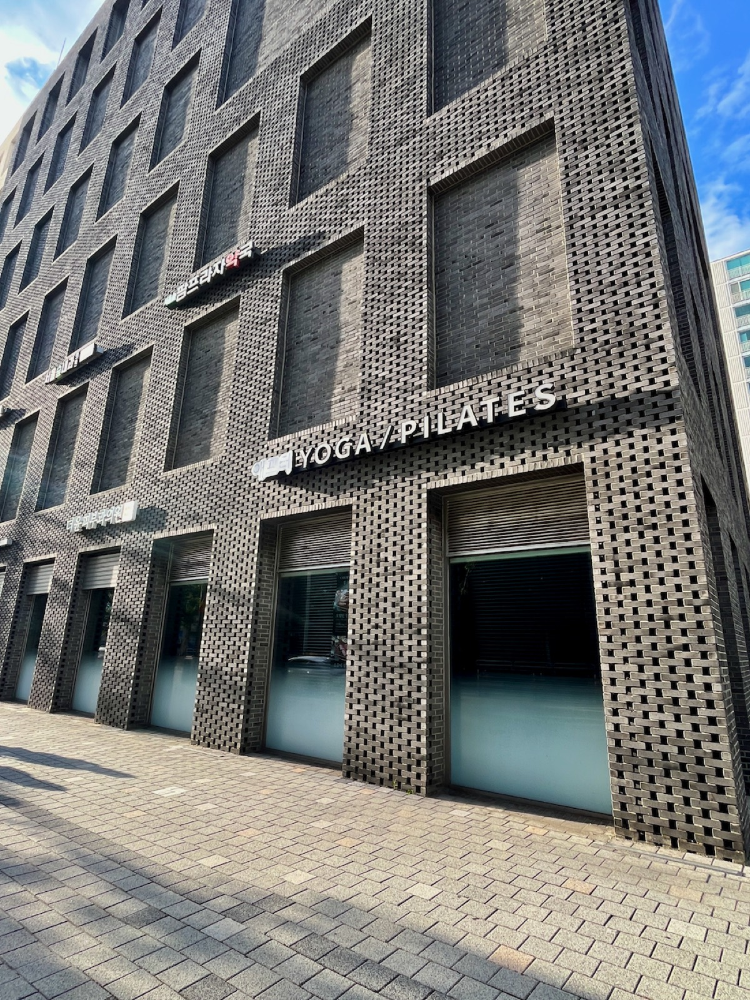

01
100% 병원 경력 물리치료사 직접 시술
단기 교육만 이수한 일반인이 아닙니다. 애프터스트레칭은 전원 병원 근무 경력을 가진 국가공인 물리치료사들로만 구성되어 있습니다. 비교할 수 없는 해부학적 전문성으로 가장 안전하고 정확하게 신체를 교정합니다.
Who Needs Passive Stretching
긴장 완화, 리커버리, 산전산후 케어, 시니어 관리, 유연성 개선, 성장기 자세 케어까지. 혼자 하기 어려운 움직임을 안전하게 리드합니다.


What Makes Us Different
01
단기 교육만 이수한 일반인이 아닙니다. 애프터스트레칭은 전원 병원 근무 경력을 가진 국가공인 물리치료사들로만 구성되어 있습니다. 비교할 수 없는 해부학적 전문성으로 가장 안전하고 정확하게 신체를 교정합니다.

02
스트레칭으로 관절을 열어준 후, 근육을 올바르게 잡아주는 운동이 병행되어야 그 회복 효과가 오래 지속됩니다.
물리치료사의 정밀 진단에 따라, 추가 금액 없이 1:1 맞춤형 필라테스 수업을 함께 받으실 수 있습니다. 오랜 요가와 필라테스 노하우를 가진 전문 강사진이 고객님의 상태에 가장 적합한 맞춤식 운동 서비스를 제공합니다.

03
여러 명이 동시에 커튼 하나로 구분되어 케어받는 흔한 마사지샵이나 샵인샵 형태가 아닙니다. 타인의 시선에서 벗어나 온전히 휴식에만 집중할 수 있도록, 넓고 안락하게 독립된 프라이빗 스트레칭 실에서 품격 있는 프리미엄 케어를 선사합니다.
Clinical Records
보건복지부 면허 물리치료사가 직접 기록한 애프터스트레칭 케어 일지
잦은 음주와 업무 스트레스로 인한 만성 피로, 무겁고 뻣뻣한 전신 통증
척추 라인 및 전신 대근육 중심의 정밀 패시브 스트레칭 50분
장시간 모니터 시청으로 인한 심한 거북목, 만성 어깨 결림과 두통
경추·흉추 주변 속근육(사각근, 판상근, 후두하근) 집중 이완 50분
관절 통증으로 스스로 운동 불가능, 전신 근육 경직 및 혈액순환 저하
관절 압박이 없는 안전하고 부드러운 수동적 관절 가동(ROM) 케어 50분
출산 후 골반 불균형, 반복되는 육아로 무너진 체형 및 하체 부종
프라이빗 단독 룸, 복부에 자극이 없는 측와위(옆으로 누운 자세) 안전 정렬
Five Principles
다섯 원리가 균형 있게 맞물릴 때, 비로소 하나의 온전한 회복이 완성됩니다.
물리치료사의 외력만으로 근육과 관절을 안전하게 확장해, 내 힘 하나 들이지 않고 유연한 몸을 만듭니다.
과활성된 긴장 스위치를 끄고 자율신경계의 균형을 되찾아, 수면과 운동 사이의 진정한 회복을 만듭니다.
관절과 근육 상태를 최적화해 무너진 체형을 바로잡고, 몸이 스스로 바른 자세를 유지하게 합니다.
근막 유착을 풀고 혈류를 개선해 노폐물 배출을 도와, 저강도 유산소 이상의 가뿐한 리커버리를 선사합니다.
긴장된 근육을 풀어 타겟 부위에 정확한 자극이 전달되게 하고, 수축·이완 효율을 높여 운동 효과를 극대화합니다.
How We Differ
병원 도수치료사와 저희 센터의 시술자 모두 ‘물리치료사 면허’를 보유한 보건의료 전문가입니다. 다만, 방문하시는 목적과 케어의 방향성에 확실한 차이가 있습니다.
일반 마사지
잠깐의 이완은 있지만
몸의 변화로 이어지진 않습니다.
병원 도수치료
통증 원인을 찾고
치료 중심으로 접근합니다.
애프터스트레칭 핵심 차이
치료와 운동 사이,
몸을 바꾸는 1:1 케어입니다.
애프터스트레칭&필라테스는
아무나 가르치지 않습니다.
인체의 뼈와 근육, 신경계를 깊이 이해하는 물리치료사 출신이자 스포츠 의학·체형 교정 전문가들이 회원님의 당일 컨디션과 근육 긴장도를 면밀히 분석한 후, 가장 안전한 가동 범위 내에서 정교하게 케어를 진행합니다.
Your Team · 서울숲점 강사진
모든 선생님은 현직 물리치료사·도수치료사로 구성됩니다. 비대면 채용 없이, 실력과 인성이 검증된 직영매장 근무 경력만 투입합니다.

대표 · 프로그램 개발
국가대표 치료 경력 · 도수치료사

서울숲점 지점장
패시브스트레칭연구소 메인강사

팀장 · 서울숲점 / 우장산역점
척추측만증 · 근골격계 전문
Space · 시설
서울숲 한복판, 천장이 높고 단정한 흐름의 스튜디오. 케어 룸·로비·바디체크 코너·라커룸·야외 테라스까지 한 층에 모여 있습니다.



Frequently Asked
방문 전 가장 많이 궁금해하시는 점들을 모았습니다. 더 궁금한 점은 카카오톡 채널 또는 전화로 편하게 문의해 주세요.
마사지는 손으로 근육 겉면을 주물러 일시적인 순환을 돕는 방식입니다. 반면 패시브 스트레칭은 해부학적 지식을 바탕으로 관절의 가동 범위를 안전하게 늘려주는 ‘기능적 이완’입니다. 스스로 풀기 힘든 속근육까지 타겟팅하여 체형 정렬과 근본적인 뻣뻣함을 해결합니다.
도수치료는 질환의 ‘치료’를 목적으로 병원에서 진행되는 의료 행위입니다. 패시브 스트레칭은 일상 속 잘못된 습관으로 굳어진 몸을 리셋하고 만성 피로를 해소하는 ‘지속 가능한 관리 및 예방 웰니스 케어’입니다.
네, 기존 운동의 효과를 극대화하기 위해 적극 추천합니다. 혼자 운동할 때는 몸이 긴장해 근육을 늘리는 데 한계가 있지만, 전문가에게 몸을 맡기면 근육이 완전히 이완되어 깊은 가동 범위까지 안전하게 도달합니다. 이는 부상을 방지하고 운동 능력을 높여줍니다.
무작정 몸을 꺾는 과격한 방식이 아니니 안심하셔도 됩니다. 세션 전 현재 관절 가동 범위를 먼저 측정하고, 호흡을 맞추며 1:1 개인 맞춤형 강도로 진행됩니다. 통증 없이 몸이 시원하게 열리는 이완감을 선사합니다.
인체 해부학과 스포츠 의학 등 전문 지식을 체계적으로 이수한 전문가들이 진행합니다. 특히 물리치료사 면허와 재활·전문 운동 자격을 갖춘 베테랑 강사진이 회원님의 체형을 정확히 분석하여 안전하게 전담 케어합니다.
이런 분들께 강력히 추천합니다.
단 1회 만으로도 즉각적인 가동 범위 개선과 개운함을 느낄 수 있습니다. 다만 굳어진 근육이 다시 돌아가는 것을 막고 바른 정렬을 유지하기 위해, 초기에는 주 1–2회 규칙적으로 관리를 받으시는 것을 권장합니다.
Visit · 오시는길
서울숲역에서 가깝고 한적한 길로 이어집니다. 처음 방문하시는 분도 헤매지 않도록 입구를 안내해 드립니다.
Book Your First Visit
물리치료사가 직접 찾아주는 내 몸의 진정한 가뿐함.
지금 첫 방문 혜택으로 부담 없이 시작해 보세요.
물리치료사 1:1 패시브 스트레칭